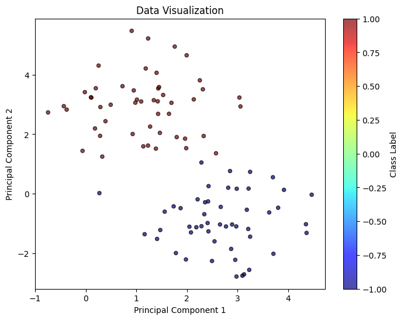

WDRO¶
[1]:
import numpy as np
import os
# Set the new path
new_path = "/Users/wty6162/Desktop/DRO_solver/dro"
# Change the current working directory
os.chdir(new_path)
from dro.src.linear_model.chi2_dro import *
from dro.src.linear_model.Wasserstein_DRO import *
Classification Task¶
Load Data¶
[10]:
from dro.src.data.dataloader_regression import regression_basic
from dro.src.data.dataloader_classification import classification_basic
from dro.src.data.draw_utils import draw_classification
X, y = classification_basic(d = 2, num_samples = 100, radius = 3, visualize = False)
draw_classification(X, y, title = 'Raw Data')

Model Fit¶
Recall \(X\) being the feature and \(Y\) being the outcome, we allow both \(Y = \theta^{\top}X\) and \(Y = \theta^{\top}X + b\) by setting fit_intercept (default = True).
[21]:
clf_model1 = WassersteinDRO(input_dim = 2, model_type = 'logistic')
clf_model1.update({'eps': 0.1, 'kappa': 'inf'})
clf_model1.fit(X, y)
[21]:
{'theta': [-1.2080033634343326, 1.2080033651301767], 'b': array(1.15966124)}
Worst-case Distribution and Visualization¶
For SVM / Logistic / LAD, we provide two different worst-case distribution computations, 1 stands for asymptotic approximation, 2 stands for the exact calculation while requiring solving n optimization problems.
[56]:
clf_model1.update({'eps': 0.1, 'kappa': 2})
worst_case_log = clf_model1.worst_distribution(X, y, 'asymp', 0.01)
draw_classification(X, y)
draw_classification(worst_case_log['sample_pts'][0][100:], worst_case_log['sample_pts'][1][100:], weight = worst_case_log['weight'][100:], title = 'worst-case', scale = 20)
[6.05127084e-11 8.09877239e-11 0.00000000e+00 6.18740229e-11
9.99999999e-01 0.00000000e+00 0.00000000e+00 8.86222641e-11
1.98821395e-10 2.14288576e-10 4.59793317e-11 0.00000000e+00
5.36600904e-11 0.00000000e+00 1.22770611e-10 7.50647962e-10
9.99999997e-01 0.00000000e+00 7.59757167e-11 6.61366487e-11
4.71260744e-11 0.00000000e+00 3.02062165e-09 8.79203145e-11
0.00000000e+00 5.69066286e-11 4.95120317e-11 0.00000000e+00
5.35145682e-11 6.91563339e-11 0.00000000e+00 0.00000000e+00
1.11314380e-10 0.00000000e+00 0.00000000e+00 0.00000000e+00
7.28624277e-11 1.17282434e-02 4.63855369e-11 3.79915887e-10
5.46411306e-11 7.54263708e-11 0.00000000e+00 0.00000000e+00
5.24936827e-11 1.35330209e-10 5.87498026e-11 6.73882542e-11
0.00000000e+00 8.01410236e-11 6.94972126e-11 0.00000000e+00
4.65056641e-11 1.66241423e-10 9.99999998e-01 6.64886156e-11
0.00000000e+00 4.84046513e-11 0.00000000e+00 0.00000000e+00
2.07520363e-10 5.94239235e-11 0.00000000e+00 1.30005052e-10
1.30305181e-10 4.88271754e-01 6.17261902e-11 0.00000000e+00
1.04746579e-10 1.56723679e-10 7.07579351e-11 4.62554620e-11
4.96064844e-11 5.62320495e-11 8.16979380e-11 0.00000000e+00
0.00000000e+00 1.86815332e-10 1.74308903e-10 0.00000000e+00
0.00000000e+00 1.14445164e-10 0.00000000e+00 5.07378383e-11
6.44672894e-11 7.21126936e-11 1.44403819e-10 9.99999999e-01
0.00000000e+00 1.32532072e-10 8.79735681e-11 0.00000000e+00
0.00000000e+00 1.15090723e-10 0.00000000e+00 5.91730383e-11
8.69890311e-11 0.00000000e+00 5.98782889e-11 5.67996585e-11] 0.003436426116838488 0.0


[6]:
len(worst_case_log['sample_pts'][0])
[6]:
100
[18]:
worst_case_log
[18]:
{'sample_pts': [array([[ 1.69259393e+00, -7.70462261e-01],
[ 3.50596012e+00, 2.31109425e-01],
[ 1.45727292e+00, 6.23473917e-03],
[ 1.46332961e+00, -1.00205506e+00],
[ 2.16870957e+00, -2.44960555e+00],
[ 2.01829470e-01, -1.09861283e+00],
[ 9.13916182e-01, -2.22077972e-01],
[ 1.01872323e+00, -1.94862901e+00],
[ 3.39239607e+00, -7.62101605e-01],
[ 1.99427551e+00, -1.96107349e+00],
[ 1.38236458e+00, -4.25402715e-01],
[ 7.75753725e-01, -1.60627286e-01],
[ 1.32610861e+00, -8.28019054e-01],
[ 1.32504069e+00, 1.31595288e+00],
[ 1.91325008e+00, -1.59403623e+00],
[ 2.74929221e+00, -1.75716895e+00],
[ 2.13561090e+00, -2.49599543e+00],
[ 5.98561254e-01, -3.39464069e-01],
[ 2.66521388e+00, -3.64957023e-01],
[ 1.81109902e+00, -8.37429000e-01],
[ 4.48225312e-01, -1.25616951e+00],
[ 1.46610853e+00, 5.20796922e-01],
[ 2.27036559e+00, -2.29936546e+00],
[ 2.25083127e+00, -9.21407585e-01],
[ 1.24982530e+00, 7.53509844e-02],
[ 2.95774683e+00, 3.94954815e-01],
[ 1.08752978e+00, -8.45537680e-01],
[ 2.25801073e+00, 4.39219823e-01],
[ 1.44757306e+00, -7.21984281e-01],
[ 8.20412329e-01, -1.73253193e+00],
[ 2.73927312e+00, 8.19914724e-01],
[ 1.85473718e+00, 4.67207593e-01],
[ 2.28838333e+00, -1.18144506e+00],
[ 2.28814291e+00, 1.00171126e+00],
[ 1.89092126e+00, 1.02831835e+00],
[-6.92997802e-01, 2.85577200e-01],
[ 2.01379437e+00, -8.35332655e-01],
[ 2.01850808e+00, -2.52389422e+00],
[ 1.70707541e+00, -1.79212733e-01],
[ 3.40464135e+00, -1.05459552e+00],
[ 1.11825370e+00, -1.03808235e+00],
[ 2.84214942e+00, -2.07574195e-01],
[ 1.39698710e+00, -2.30578713e-02],
[ 2.02382485e+00, 4.32319686e-01],
[ 1.22469421e+00, -8.63987451e-01],
[ 1.53463915e+00, -1.99984025e+00],
[ 2.22286758e+00, -2.75270032e-01],
[ 1.93186076e+00, -7.70912438e-01],
[ 5.11376560e-01, -9.56970627e-01],
[ 1.58403279e+00, -1.33860257e+00],
[ 6.21405842e-01, 2.24453827e+00],
[ 2.66887745e+00, 2.01506523e+00],
[ 1.04024194e+00, 1.76604150e+00],
[-1.13607966e+00, 1.81397354e+00],
[ 8.42921764e-01, 4.30372953e+00],
[ 5.90330589e-01, 2.14203476e+00],
[ 7.47979784e-01, 6.71809379e-01],
[ 1.92551437e+00, 2.59242045e+00],
[ 1.57372350e+00, 9.31099962e-01],
[ 2.18548586e+00, 4.38636354e-01],
[ 1.36954865e+00, 4.03094304e+00],
[-2.07844772e-01, 1.27418969e+00],
[ 8.82342919e-01, 1.33701176e+00],
[-7.67971877e-01, 1.90905039e+00],
[-2.79612160e-01, 2.31407985e+00],
[-1.36732681e-01, 3.39042182e+00],
[-5.61738747e-04, 1.51842590e+00],
[ 1.59620877e+00, 6.09623101e-01],
[ 1.01015149e+00, 3.14763017e+00],
[-8.24791681e-01, 2.02512128e+00],
[ 1.04257435e+00, 2.62231029e+00],
[-4.54259157e-01, 5.20030804e-01],
[ 1.30463312e+00, 2.13747209e+00],
[ 1.03318440e+00, 2.18693563e+00],
[ 1.02666832e-01, 2.07274111e+00],
[ 1.07576403e+00, 1.12613600e+00],
[ 2.64846606e+00, 2.31432034e+00],
[-4.08611944e-01, 2.49704103e+00],
[-1.91990117e-01, 2.62757202e+00],
[ 1.94128713e+00, 1.01980510e+00],
[ 1.74606768e+00, 2.25326834e+00],
[ 1.60475171e+00, 3.73728040e+00],
[ 5.37303438e-01, 1.08675125e+00],
[-1.06822876e-01, 1.02467713e+00],
[ 7.05589844e-01, 2.18163939e+00],
[ 1.05938235e+00, 2.66767067e+00],
[ 7.95693445e-01, 3.29402149e+00],
[ 5.18034720e-01, 4.56065658e+00],
[ 1.40835890e+00, 9.83329861e-01],
[-2.88200944e-01, 2.32295983e+00],
[ 5.59228768e-01, 2.55448791e+00],
[ 1.25592918e+00, 1.76765850e+00],
[-6.41021645e-02, 3.25640192e-01],
[ 3.36176602e-01, 2.69688621e+00],
[ 9.96785298e-01, 5.94748638e-01],
[ 9.55872479e-01, 2.22580480e+00],
[-1.01165883e-01, 1.99421252e+00],
[ 8.40900272e-01, 6.97517119e-01],
[ 1.14047891e+00, 2.40127194e+00],
[ 1.86574280e+00, 2.89428947e+00],
[-9.99830741e+03, 9.99922954e+03]]),
array([-1., -1., -1., -1., -1., -1., -1., -1., -1., -1., -1., -1., -1.,
-1., -1., -1., -1., -1., -1., -1., -1., -1., -1., -1., -1., -1.,
-1., -1., -1., -1., -1., -1., -1., -1., -1., -1., -1., -1., -1.,
-1., -1., -1., -1., -1., -1., -1., -1., -1., -1., -1., 1., 1.,
1., 1., 1., 1., 1., 1., 1., 1., 1., 1., 1., 1., 1.,
1., 1., 1., 1., 1., 1., 1., 1., 1., 1., 1., 1., 1.,
1., 1., 1., 1., 1., 1., 1., 1., 1., 1., 1., 1., 1.,
1., 1., 1., 1., 1., 1., 1., 1., 1., -1.])],
'weight': array([0.0099, 0.01 , 0.01 , 0.01 , 0.01 , 0.01 , 0.01 , 0.01 ,
0.01 , 0.01 , 0.01 , 0.01 , 0.01 , 0.01 , 0.01 , 0.01 ,
0.01 , 0.01 , 0.01 , 0.01 , 0.01 , 0.01 , 0.01 , 0.01 ,
0.01 , 0.01 , 0.01 , 0.01 , 0.01 , 0.01 , 0.01 , 0.01 ,
0.01 , 0.01 , 0.01 , 0.01 , 0.01 , 0.01 , 0.01 , 0.01 ,
0.01 , 0.01 , 0.01 , 0.01 , 0.01 , 0.01 , 0.01 , 0.01 ,
0.01 , 0.01 , 0.01 , 0.01 , 0.01 , 0.01 , 0.01 , 0.01 ,
0.01 , 0.01 , 0.01 , 0.01 , 0.01 , 0.01 , 0.01 , 0.01 ,
0.01 , 0.01 , 0.01 , 0.01 , 0.01 , 0.01 , 0.01 , 0.01 ,
0.01 , 0.01 , 0.01 , 0.01 , 0.01 , 0.01 , 0.01 , 0.01 ,
0.01 , 0.01 , 0.01 , 0.01 , 0.01 , 0.01 , 0.01 , 0.01 ,
0.01 , 0.01 , 0.01 , 0.01 , 0.01 , 0.01 , 0.01 , 0.01 ,
0.01 , 0.01 , 0.01 , 0.01 , 0.0001])}
Robust Satisificng version of Wasserstein DRO¶
[4]:
import numpy as np
import os
os.chdir('/Users/wty6162/Desktop/DRO_solver')
from dro.src.linear_model.Wasserstein_DRO import *
clf_model_rs = Wasserstein_DRO_satisficing(input_dim = 2, model_type = 'svm')
clf_model_rs.fit(X, y)
[4]:
{'theta': [-0.3365834154114554, 6.700882661679504]}
[3]:
import numpy as np
import os
os.chdir('/Users/wty6162/Desktop/DRO_solver')
from dro.src.linear_model.Wasserstein_DRO import *
from dro.src.data.dataloader_regression import regression_basic
from dro.src.data.dataloader_classification import classification_basic
from dro.src.data.draw_utils import draw_classification
X, y = classification_basic(d = 2, num_samples = 100, radius = 3, visualize = False)
# draw_classification(X, y, title = 'Raw Data')
clf_model1 = WassersteinDRO(input_dim = 2, model_type = 'logistic')
clf_model1.fit_intercept = False
clf_model1.update({'eps': 1.5, 'p': 'inf', 'kappa': 10})
clf_model1.fit(X, y)
worst_case_log = clf_model1.worst_distribution(X, y, 1)
draw_classification(X, y)
draw_classification(worst_case_log['sample_pts'][0], worst_case_log['sample_pts'][1], weight = worst_case_log['weight'], title = 'worst-case')


Regression Task¶
We can construct similar models for Wasserstein DRO regression models, including lad and ols loss.
[2]:
import numpy as np
import os
# Set the new path
new_path = "/Users/wty6162/Desktop/DRO_solver/dro"
# Change the current working directory
os.chdir(new_path)
from dro.src.linear_model.Wasserstein_DRO import *
from dro.src.data.dataloader_regression import regression_basic
feature_dim = 5
X, y = regression_basic(num_samples = 100, d = feature_dim, noise = 1)
reg_model = WassersteinDRO(input_dim = feature_dim, model_type = 'lad')
costM = np.identity(feature_dim)
costM[0][0] = 1
reg_model.update({'cost_matrix': costM, 'eps': 1, 'p':2, 'kappa': 0.001})
print(reg_model.fit(X, y))
reg_model.update({'cost_matrix': costM, 'eps': 1, 'p':2, 'kappa': 'inf'})
print(reg_model.fit(X, y))
reg_model.update({'cost_matrix': costM, 'eps': 1, 'p':1, 'kappa': 'inf'})
print(reg_model.fit(X, y))
---------------------------------------------------------------------------
AttributeError Traceback (most recent call last)
/var/folders/72/gsmssx6d0v585bc4x6z7cjqh0000gn/T/ipykernel_2471/2533229371.py in <module>
6 os.chdir(new_path)
7
----> 8 from dro.src.linear_model.Wasserstein_DRO import *
9 from dro.src.data.dataloader_regression import regression_basic
10
~/Desktop/DRO_solver/dro/dro/__init__.py in <module>
4
5
----> 6 from .src import *
~/Desktop/DRO_solver/dro/dro/src/__init__.py in <module>
----> 1 from .data import *
2 from .linear_model import *
3 from .neural_model import *
~/Desktop/DRO_solver/dro/dro/src/data/__init__.py in <module>
----> 1 from .dataloader_classification import classification_basic, classification_DN21, classification_SNVD20, classification_LWLC
2 from .dataloader_regression import regression_basic, regression_DN20_1, regression_DN20_2, regression_DN20_3, regression_LWLC
~/Desktop/DRO_solver/dro/dro/src/data/dataloader_classification.py in <module>
1 import numpy as np
----> 2 from dro.src.data.draw_utils import draw_classification
3
4 def classification_basic(d=2, k=2, num_samples=500, radius=5.0, seed=42, visualize=False, save_dir= None):
5 """
~/Desktop/DRO_solver/dro/dro/src/data/draw_utils.py in <module>
1 import matplotlib.pyplot as plt
----> 2 from sklearn.decomposition import PCA
3 import numpy as np
4
5 class VisualizationError(Exception):
/opt/anaconda3/lib/python3.9/site-packages/sklearn/__init__.py in <module>
71 _distributor_init,
72 )
---> 73 from .base import clone # noqa: E402
74 from .utils._show_versions import show_versions # noqa: E402
75
/opt/anaconda3/lib/python3.9/site-packages/sklearn/base.py in <module>
17 from ._config import config_context, get_config
18 from .exceptions import InconsistentVersionWarning
---> 19 from .utils._estimator_html_repr import _HTMLDocumentationLinkMixin, estimator_html_repr
20 from .utils._metadata_requests import _MetadataRequester, _routing_enabled
21 from .utils._param_validation import validate_parameter_constraints
/opt/anaconda3/lib/python3.9/site-packages/sklearn/utils/__init__.py in <module>
13 from . import _joblib, metadata_routing
14 from ._bunch import Bunch
---> 15 from ._chunking import gen_batches, gen_even_slices
16 from ._estimator_html_repr import estimator_html_repr
17
/opt/anaconda3/lib/python3.9/site-packages/sklearn/utils/_chunking.py in <module>
9
10 from .._config import get_config
---> 11 from ._param_validation import Interval, validate_params
12
13
/opt/anaconda3/lib/python3.9/site-packages/sklearn/utils/_param_validation.py in <module>
15
16 from .._config import config_context, get_config
---> 17 from .validation import _is_arraylike_not_scalar
18
19
/opt/anaconda3/lib/python3.9/site-packages/sklearn/utils/validation.py in <module>
19 from .. import get_config as _get_config
20 from ..exceptions import DataConversionWarning, NotFittedError, PositiveSpectrumWarning
---> 21 from ..utils._array_api import _asarray_with_order, _is_numpy_namespace, get_namespace
22 from ..utils.deprecation import _deprecate_force_all_finite
23 from ..utils.fixes import ComplexWarning, _preserve_dia_indices_dtype
/opt/anaconda3/lib/python3.9/site-packages/sklearn/utils/_array_api.py in <module>
15
16 from .._config import get_config
---> 17 from .fixes import parse_version
18
19 _NUMPY_NAMESPACE_NAMES = {"numpy", "array_api_compat.numpy"}
/opt/anaconda3/lib/python3.9/site-packages/sklearn/utils/fixes.py in <module>
15 import scipy
16 import scipy.sparse.linalg
---> 17 import scipy.stats
18
19 try:
/opt/anaconda3/lib/python3.9/site-packages/scipy/stats/__init__.py in <module>
439 """
440
--> 441 from .stats import *
442 from .distributions import *
443 from .morestats import *
/opt/anaconda3/lib/python3.9/site-packages/scipy/stats/stats.py in <module>
41 import scipy.special as special
42 from scipy import linalg
---> 43 from . import distributions
44 from . import mstats_basic
45 from ._stats_mstats_common import (_find_repeats, linregress, theilslopes,
/opt/anaconda3/lib/python3.9/site-packages/scipy/stats/distributions.py in <module>
6 # instead of `git blame -Lxxx,+x`.
7 #
----> 8 from ._distn_infrastructure import (rv_discrete, rv_continuous, rv_frozen)
9
10 from . import _continuous_distns
/opt/anaconda3/lib/python3.9/site-packages/scipy/stats/_distn_infrastructure.py in <module>
22 # for root finding for continuous distribution ppf, and max likelihood
23 # estimation
---> 24 from scipy import optimize
25
26 # for functions of continuous distributions (e.g. moments, entropy, cdf)
/opt/anaconda3/lib/python3.9/site-packages/scipy/optimize/__init__.py in <module>
399
400 from .optimize import *
--> 401 from ._minimize import *
402 from ._root import *
403 from ._root_scalar import *
/opt/anaconda3/lib/python3.9/site-packages/scipy/optimize/_minimize.py in <module>
25 from ._trustregion_krylov import _minimize_trust_krylov
26 from ._trustregion_exact import _minimize_trustregion_exact
---> 27 from ._trustregion_constr import _minimize_trustregion_constr
28
29 # constrained minimization
/opt/anaconda3/lib/python3.9/site-packages/scipy/optimize/_trustregion_constr/__init__.py in <module>
2
3
----> 4 from .minimize_trustregion_constr import _minimize_trustregion_constr
5
6 __all__ = ['_minimize_trustregion_constr']
/opt/anaconda3/lib/python3.9/site-packages/scipy/optimize/_trustregion_constr/minimize_trustregion_constr.py in <module>
3 from scipy.sparse.linalg import LinearOperator
4 from .._differentiable_functions import VectorFunction
----> 5 from .._constraints import (
6 NonlinearConstraint, LinearConstraint, PreparedConstraint, strict_bounds)
7 from .._hessian_update_strategy import BFGS
/opt/anaconda3/lib/python3.9/site-packages/scipy/optimize/_constraints.py in <module>
6 from .optimize import OptimizeWarning
7 from warnings import warn
----> 8 from numpy.testing import suppress_warnings
9 from scipy.sparse import issparse
10
/opt/anaconda3/lib/python3.9/site-packages/numpy/testing/__init__.py in <module>
10 from ._private.utils import *
11 from ._private.utils import (_assert_valid_refcount, _gen_alignment_data)
---> 12 from ._private import extbuild, decorators as dec
13 from ._private.nosetester import (
14 run_module_suite, NoseTester as Tester
/opt/anaconda3/lib/python3.9/site-packages/numpy/testing/_private/extbuild.py in <module>
9 import sys
10 import sysconfig
---> 11 from numpy.distutils.ccompiler import new_compiler
12 from distutils.errors import CompileError
13
/opt/anaconda3/lib/python3.9/site-packages/numpy/distutils/__init__.py in <module>
22 # Must import local ccompiler ASAP in order to get
23 # customized CCompiler.spawn effective.
---> 24 from . import ccompiler
25 from . import unixccompiler
26
/opt/anaconda3/lib/python3.9/site-packages/numpy/distutils/ccompiler.py in <module>
712 "Arm C Compiler")
713
--> 714 ccompiler._default_compilers += (('linux.*', 'intel'),
715 ('linux.*', 'intele'),
716 ('linux.*', 'intelem'),
AttributeError: module 'distutils.ccompiler' has no attribute '_default_compilers'
[2]:
reg_model.update({'cost_matrix': costM, 'eps': 1, 'p':2, 'kappa': 'inf'})
worst_case_log = reg_model.worst_distribution(X, y, 'asymp', 0.01)
worst_case_log['sample_pts'][0][-1]
[2]:
array([ 0.97511973, -0.67716171, -0.01224677, -0.89725437, 0.07580456])